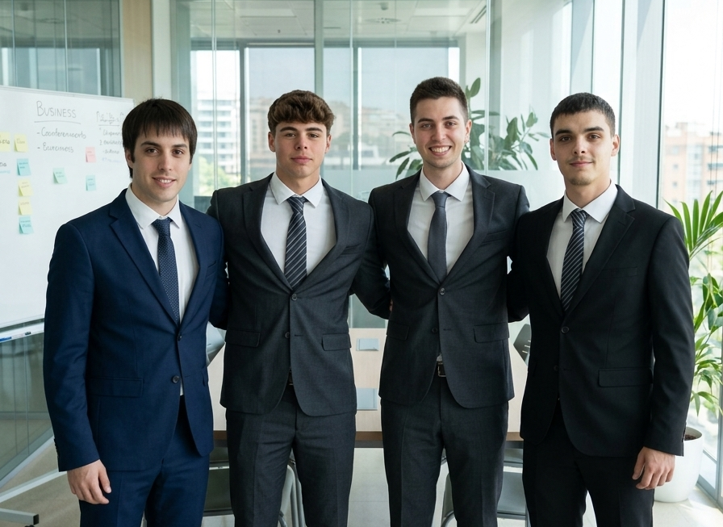

Web-orri honek nork eta zertarako sortu den.
Gune hau Euskal Herriko Unibertsitateko (UPV/EHU) Informatika Fakultateko ikasle talde honek eraiki du:

Ibai Fuertes, Yago Mato, Ekaitz Rubio eta Aitzol Velez de Mendizabal
Webgune honen helburu nagusia EHUko ikasleei zein irakasleei Informatika Ingeniaritzako Graduko eta Adimen Artifizialeko Graduko Gradu Amaierako Lanen inguruko informazio erabilgarria, egituratua eta irisgarria eskaintzea da. Informazio guztia EHUko iturrietatik jasota izan da, webgune honek ez du iturri horiek ordezkatzea bilatzen baizik eta eskola ariketa moduan eraikitzea.